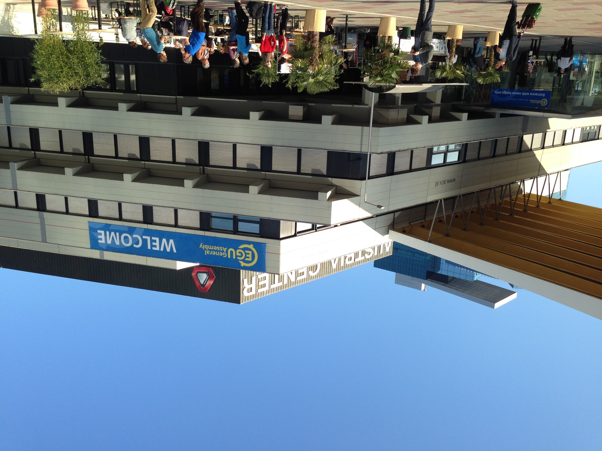

Research Work Detail and Curriculum Vitae
Current and Past Research Positions:
- Florida State University (2008-2011) Research Associate
- Newcastle Univeristy/Met Office Hadley Centre (2011-2023) Research Associate
- National Oceanography Centre (2023-) Research Scientist
Education:
- Boston University 1999 BA Space & Planetary Science (advisor: Theodore Fritz (deceased))
- Penn State University 2001 MSc Meteorology (advisor: Jenni Evans)
- University of Maryland 2008 PhD Atmospheric & Oceanic Science (advisor: Sumant Nigam)
Project involvement:
- NOAA/USGS High resolution dynamical downscaling over the South East US and Caribbean
- NERC/ERC CONVEX/INTENSE/FUTURE-STORMS: High resolution dynamical downscaling over the UK
- World Weather Attribution
- EuroCORDEX FPS convective-permitting model ensemble / EU Horizon2020 European Climate Prediction System
- DEFRA/EA UK Climate Projections
- NERC FUTURE-DRAINAGE: Climate services and adapation -- translating UK Climate Projection information to surface water flooding information
- NERC CLASS/ATLANTIS: Ocean surface processes
Research topics:
- Tropical meteorology
- Large-scale dynamics
- Global and regional/mesoscale climate models
- Climate change adapation
- Data science and statistical modelling of climate data
- Extreme events
- Land and sea surface observations
Research outreach:
Google Scholar profile
Full CV
Return to index page